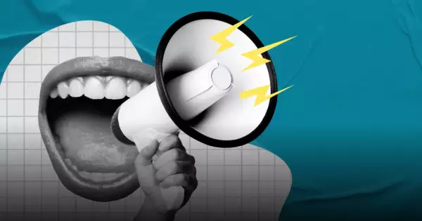
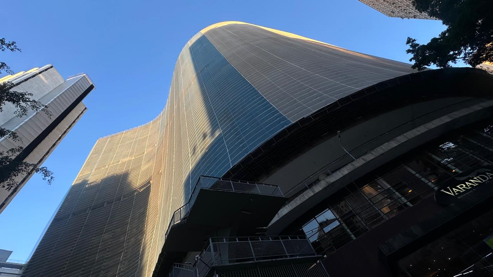

Conhecer o mundo
Um dos meus maiores sonhos é conseguir trabalhar de qualquer lugar do mundo. Quero ter um trabalho que me permita levar meu computador, escolher um lugar no mapa e simplesmente ir. Quero conhecer países, culturas, comidas, pessoas e formas diferentes de enxergar a vida.
Não quero viajar apenas para tirar fotos e dizer que estive em determinado lugar. Quero realmente viver essas experiências, conhecer pessoas e entender um pouco de cada lugar por onde eu passar.
Usar minha voz para ajudar
Também tenho vontade de fazer muitos voluntariados ao longo da minha vida. Quero conhecer diferentes realidades e, de alguma forma, conseguir ajudar as pessoas que precisarem.
Um dos meus maiores desejos é conseguir levar minha voz para muitos lugares e usar aquilo que eu sei, aquilo que eu aprendi e as oportunidades que eu tiver para fazer alguma diferença na vida de outras pessoas.

Minha carreira dos sonhos
Profissionalmente, um dos meus objetivos é trabalhar com Cyber Security. Ainda tenho muito para aprender e estou no começo dessa caminhada na tecnologia, mas é uma área que me desperta bastante curiosidade.
Quero continuar estudando, descobrir qual área da tecnologia realmente combina comigo e, no futuro, conseguir trabalhar com algo que eu goste e que também me dê a liberdade para realizar outros sonhos.
Meus próximos passos
Nem todos os meus sonhos estão tão distantes. Alguns deles são coisas que quero conquistar nos próximos anos.
Um dos principais é sair da casa dos meus pais e morar por alguns anos em São Paulo. Quero viver essa experiência, conhecer muita gente nova, fazer novas amizades e descobrir como seria construir uma vida em uma cidade que eu já gosto tanto.
Também quero comprar um MacBook e finalmente montar pelo menos 78% do meu setup dos sonhos. 😂

Viver muito e colecionar experiências
No fim das contas, acho que meu maior sonho é simplesmente viver muito. Quero ir a muitos shows, conhecer lugares que ainda nem sei que existem, fazer amizades, aprender coisas novas, rir muito e ter histórias para contar.
Também quero construir uma família algum dia, quando sentir que chegou a hora. Mas não tenho pressa. Ainda quero viver muita coisa antes disso.
Quero olhar para trás um dia e sentir que aproveitei as oportunidades que tive e que não deixei a vida passar simplesmente por medo de tentar.
Pequenos sonhos que também importam
Além dos grandes planos, também tenho uma lista de pequenas coisas que quero conquistar:
- Ler muito mais livros;
- Aprender finalmente espanhol, italiano, francês e outras línguas, além de aprender a andar de patins;
- Comprar um patinete ou uma motinha elétrica;
- Conhecer muitas pessoas novas;
- Ir a muitos outros shows;
- Viajar cada vez mais para outros cantos do Brasil.